OrganicHAR places sensor capabilities at the center of activity discovery. Privacy-preserving sensors identify naturally occurring key moments, a vision language model is queried only at those moments, and discrete activity labels are discovered at granularities the sensors can reliably detect.
Carnegie Mellon University · Fraunhofer Portugal AICOS
Proc. ACM IMWUT 2025 · Vol. 9, No. 4, Article 203 · UbiComp 2025
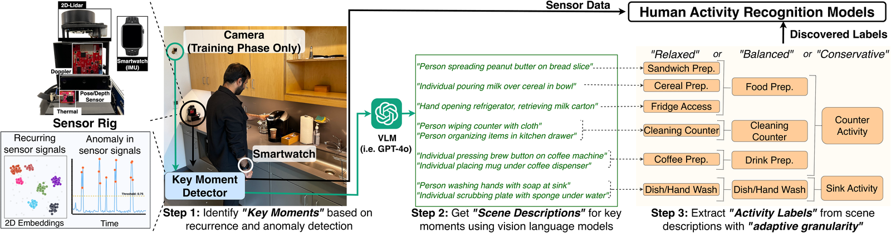
Let the privacy-preserving sensors decide when to look, query a vision language model only at those moments, and discover activity labels at granularities the sensors can detect.
Deploying human activity recognition (HAR) at home is still rare because sensor signals vary widely across houses, people, and time, essentially requiring in-situ data collection and training. Prior approaches use cameras to generate training labels for privacy-preserving sensors, but this forces the sensors to detect predefined activities that cameras can see yet the sensors themselves cannot reliably distinguish.
OrganicHAR inverts this relationship. It identifies naturally occurring signal patterns using privacy-preserving sensors, leverages Vision Language Models (VLMs) only during these key moments for scene understanding, and discovers discrete activity labels at granularities that these sensors can reliably detect. Because video is processed only at the key moments identified by local sensors, OrganicHAR reduces queries to the VLM by 90%, enabling practical and privacy-preserving activity recognition in natural settings.
Only the key moments identified by local sensors are sent to the VLM, i.e., about 9 to 11% of the collected video.
Average accuracy across sensor configurations and granularities, ranging from 70% to 88% depending on hardware and granularity.
Categories discovered per user (15 across 12 users), tailored to each environment and to what the sensors can detect, with no manual annotation.
Deploying human activity recognition (HAR) at home is still rare because sensor signals vary wildly across houses, people, and time, essentially requiring in-situ data collection and training. Prior approaches use cameras to generate training labels for privacy-preserving sensors (LiDAR, RADAR, Thermal), but this forces sensors to detect predefined activities that cameras can see yet the sensors themselves cannot reliably distinguish. In this work, we introduce OrganicHAR, an activity discovery framework that inverts this relationship by placing sensor capabilities at the center of activity discovery. Our approach identifies naturally occurring signal patterns using privacy-preserving sensors, leverages Vision Language Models (VLMs) only during these key moments for scene understanding, and discovers discrete activity labels at granularities that these sensors can reliably detect. Our evaluation with 12 participants demonstrates OrganicHAR’s effectiveness: it achieves 79% accuracy for coarse (4-5) activities using only basic ambient sensors (radar, lidar, thermal arrays), and 73% accuracy for fine-grained (8-9) activities when a wearable IMU, depth, and pose sensor are added. OrganicHAR maintains 77% accuracy on average across configurations while discovering 4-8 categories per user (15 across all users) tailored to each environment and sensor capabilities. By triggering video processing only at key moments identified by local sensors, we reduce queries to VLM by 90%, enabling practical and privacy-preserving activity recognition in natural settings.
Featurize each sensor, let the sensors choose key moments, describe only those moments with a VLM, then discover and refine labels.
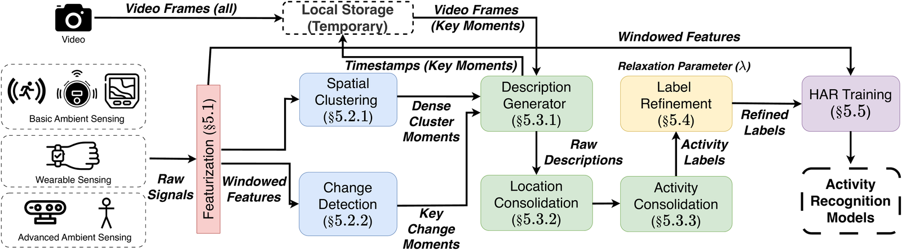
1 · Featurization. Each sensor modality is featurized separately over a sliding window of 5-second segments with a 0.5-second stride. This keeps the modalities complementary, so a single model is not forced to reconcile signals that the sensors capture very differently.
2 · Key moments identification. Two complementary modules decide which segments are worth analyzing. Spatial clustering applies HDBSCAN in each sensor’s feature space to surface recurring patterns, and representative high-confidence windows from each cluster are selected. Change detection uses an online Gaussian Mixture Model to score anomalies and flag activity transitions. Together these select only about 9 to 11% of the collected video as key moments.
3 · Label discovery. A vision language model describes only the key moments, and this is the only stage that processes video, during initial training. An LLM then consolidates the varied references into consistent functional zones (e.g., sink area, counter area) and clusters the action descriptions within each zone into discrete activity labels.
4 · Semantic granularity control. Each label is expanded across several semantic dimensions to build a pairwise similarity matrix, and hierarchical clustering with a relaxation parameter λ merges labels at a chosen granularity. Smaller λ preserves finer distinctions; larger λ yields coarser categories.
5 · Training privacy-preserving models. The discovered labels train per-modality classifiers with leave-one-session-out cross-validation, combined by late fusion. At inference the system is hierarchical: it first identifies the functional zone, then applies a zone-specific recognition model with its selected sensor ensemble. The camera is needed only during discovery, not during deployment.
OrganicHAR is evaluated in three sensing configurations of increasing capability. A camera is used only during the initial discovery phase and is removed for deployment.
77 GHz mmWave (TI AWR1642BOOST-ODS) at 5 Hz; movement range and radial velocity.
Slamtec RPLIDAR A1M8, 360° scan at 6 to 8 Hz; spatial occupancy in the sensor plane.
FLIR Lepton 3.5 downsampled to a 10x10 thermal map at 8 Hz, downsampled for privacy.
Apple Watch accelerometer, gyroscope, and magnetometer at 50 Hz; personal motion only.
OAK-D Lite normalized 2D pose, 25 body keypoints at 6 to 8 Hz, computed on device.
OAK-D Lite stereo-vision 10x10 depth array; closer objects appear darker.
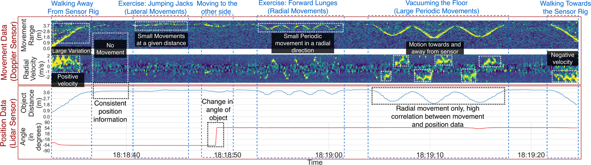
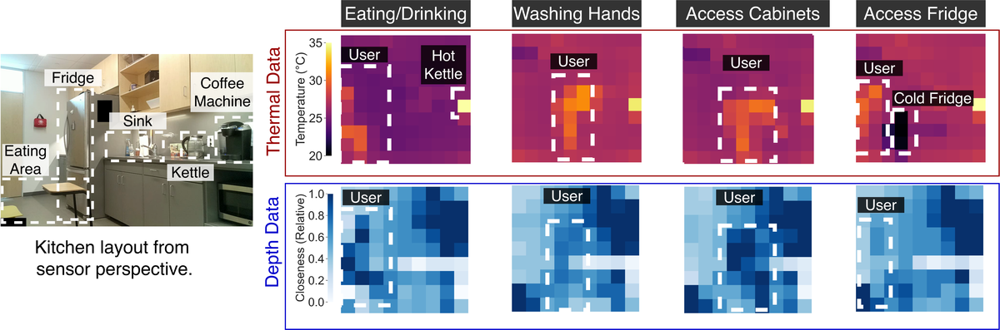
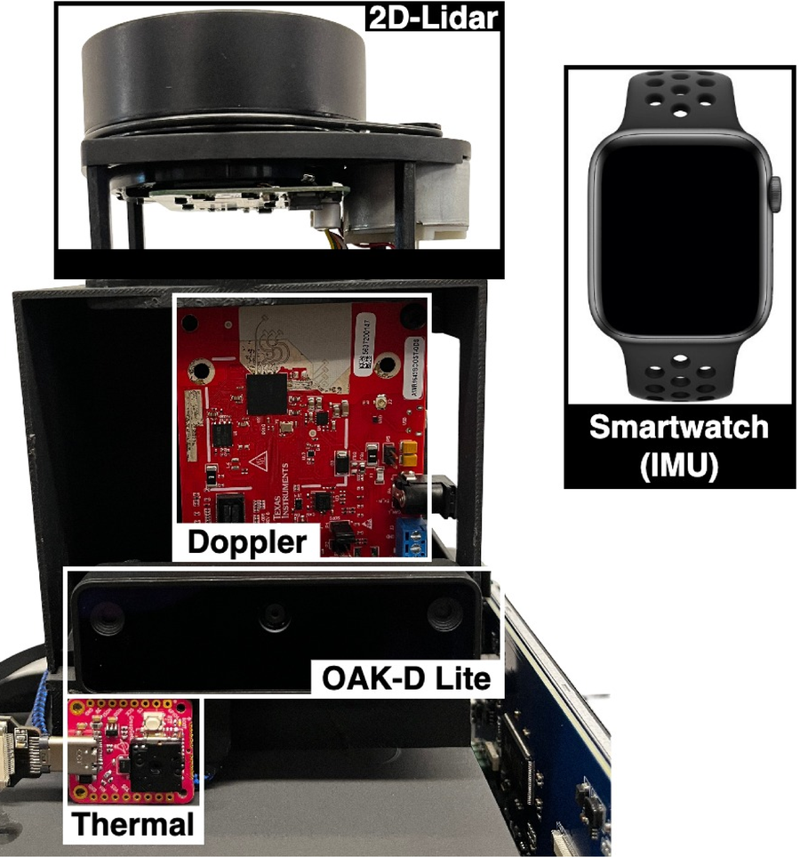
The relaxation parameter λ controls how finely discovered labels are split. Broad categories branch into more specific activities as granularity increases, following human-intuitive hierarchies.
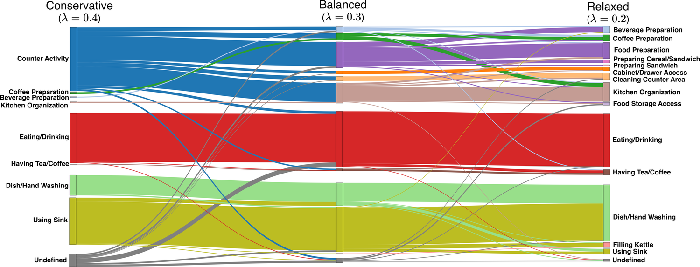
The controlled study covers breakfast-preparation tasks across three distinct kitchen layouts, with four participants per kitchen.
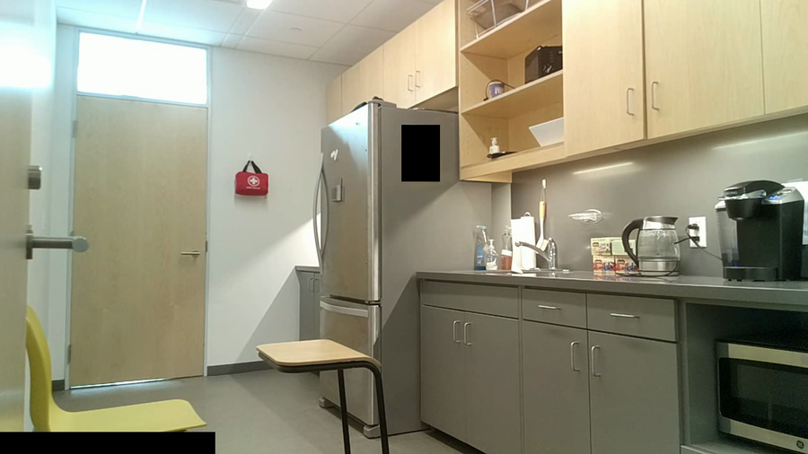
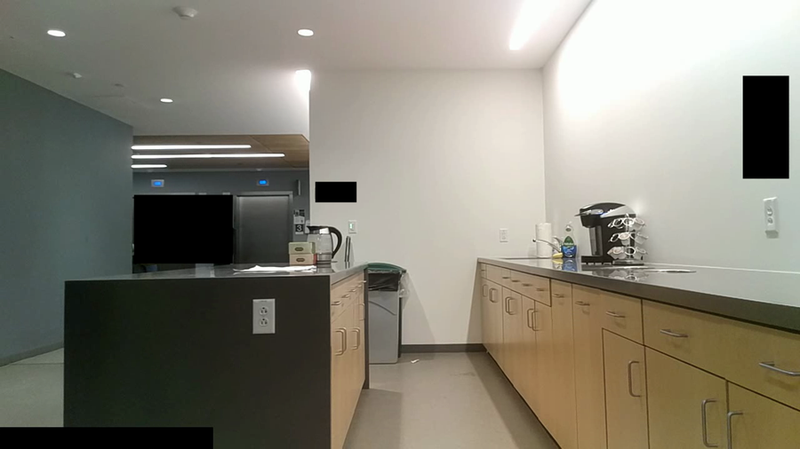
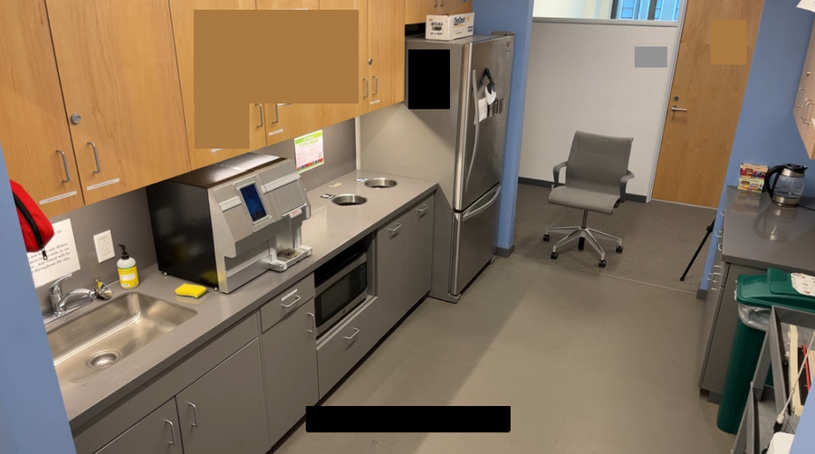
12 participants and 3 kitchens in the controlled study, plus a real-world deployment in 5 homes over 7 days each.
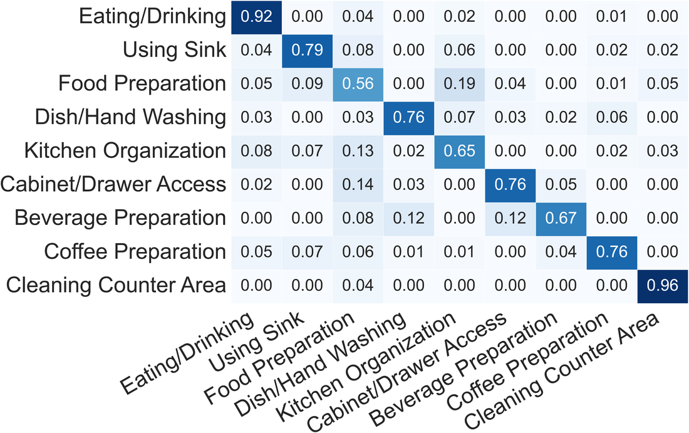
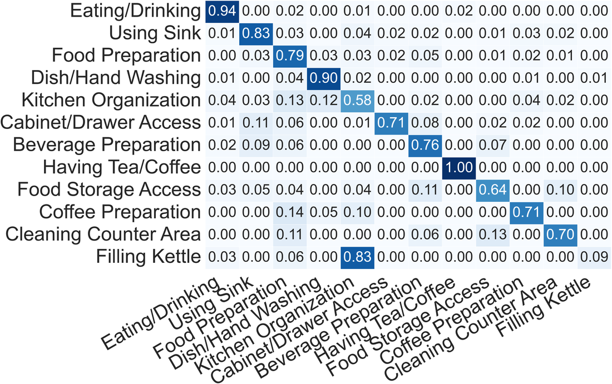
Five sequential stages, from raw sensor streams to evaluated activity models.
.env before running stage 3. Stages 1, 2, 4, and 5 run locally without any VLM access.
Process raw sensor streams and segment them into 5-second windows with a 0.5-second stride (s1.create_session_data/).
Featurize each modality, then run HDBSCAN spatial clustering and GMM change detection to select the key moments (s2.create_clusters/).
Describe the key moments with a VLM, consolidate locations and actions with an LLM, and build the activity-label similarity matrix (s3.generate_labels/).
Train per-sensor and late-fusion models on the discovered labels with leave-one-session-out training (s4.train_activity_models/).
Map ground-truth annotations to discovered labels and compute accuracy, F1, precision, and recall (s5.evaluation/).
# Python 3.8+ (conda recommended)
git clone https://github.com/synergylabs/OrganicHAR.git
cd OrganicHAR
cp .env.example .env # set data paths and VLM/LLM API keys
# 1) Sessions and 5s windows (0.5s stride)
cd s1.create_session_data
python 3c_extract_window_data.py --participant <name> --window_size 5.0 --sliding_window_length 0.5
# 2) Key moments: HDBSCAN clustering + GMM change detection
cd ../s2.create_clusters
python 4a_preprocess_x_data.py --participant <name>
python 5a_cluster_data.py --participant <name> --alpha 0.5
python 5b_change_detection.py --participant <name>
python 5c_compile_interesting_segments.py --participant <name>
# 3) Discover labels with a VLM/LLM (uses API keys)
cd ../s3.generate_labels
python 6a_generate_descriptions.py --participant <name>
python 7a_generate_label_sim_matrix.py --participant <name> --merging_threshold 0.3
# 4) Train, then 5) evaluate
cd ../s4.train_activity_models && python 8a_train_activity_models.py --participant <name> --alpha 0.5
cd ../s5.evaluation && python 9d_evaluate_predictions.py --participant <name> --alpha 0.5The merging threshold λ sets granularity: 0.4 conservative (4 to 5 coarse activities), 0.3 balanced (6 to 7), and 0.2 relaxed (8 to 9 fine-grained). See each stage’s scripts and the repository README for the full configuration and the code-to-paper mapping.
@article{patidar2025organichar,
author = {Patidar, Prasoon and Arakawa, Riku and Gra\c{c}a, Ricardo and
Moutinho, R\'uben and Soares, Adriano and Vasconcelos, Ana and
Talami, Filippo and Couto da Silva, Joana and Silva, In\^es and
Mendes Santos, Cristina and Goel, Mayank and Agarwal, Yuvraj},
title = {OrganicHAR: Towards Activity Discovery in Organic Settings for
Privacy Preserving Sensors Using Efficient Video Analysis},
journal = {Proceedings of the ACM on Interactive, Mobile, Wearable
and Ubiquitous Technologies (IMWUT)},
year = {2025},
volume = {9},
number = {4},
articleno = {203},
month = {dec},
publisher = {Association for Computing Machinery},
doi = {10.1145/3770674},
keywords = {activity recognition, ambient intelligence, interactive agents}
}BSD 3-Clause
The OrganicHAR source code is released under the BSD 3-Clause License. You may use, modify, and redistribute it with attribution. See LICENSE.
CC BY 4.0
Figures and text reproduced on this page are © 2025 the authors, available under CC BY 4.0. The published article is open-access via the ACM DOI.
This work was partially supported by NSF Awards SaTC-1801472 and CSR-1526237, the Translational Fellowship from CMU’s Center for Machine Learning and Health (CMLH), and the Presidential Fellowship from CMU’s CyLab Security and Privacy Institute. We gratefully acknowledge the generous gift from Trane Technologies supporting smart buildings research at Carnegie Mellon University, and we thank the Longitudinal Prize for Dementia Foundation and the Lived Experience Advisory Panel for their feedback on the overall project direction.